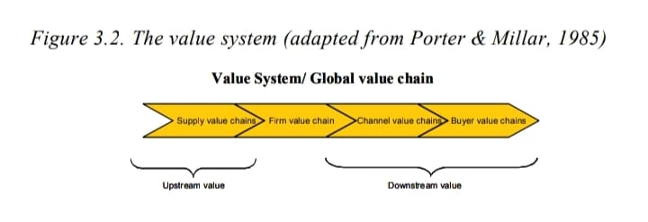

In the competitive scenario unfolding at the beginning of the 21st century, characterized by the fast pace of technologic changes and opening and volatilization of global markets, an understanding of global value chains is of critical importance to outlining strategy.
As shown in Chapter II, in the most complex production chains, assessing bargaining power in relation to customers and suppliers may not be enough to understand the power relationships in the global competitive market. Imagine a semiconductors industry, whose clients may be the PC industry, but also be in telecommunications, electronics end users, and new areas such as smart cards. How can one discuss bargaining power based only on the elements introduced on Chapter II?
On the other hand, the process of decentralizing production activities, very often marked by globally-based outsourcing and by the streamlining of yesterday’s large corporate structures, created the so-called “network-com
panies.” According to Chesnais (1996), large companies operating on a global basis gave priority to some functions considered strategic, leading a global chain of suppliers and distributors, performing activities previously performed by verticalized companies.
This process of “de-verticalization” presents some risks. However, when a company takes over value activities, it is possible to enforce its interests over other chain links by using its economic power.
For small companies, which are part of these large chains, the understanding of power dynamics and relations is decisive for their survival and development, and to outline defensive strategies enabling them to increase their relative power in the chain by means of partnerships and networks of cooperation.
The issues discussed are vital for strategy definition, since they bring a more detailed understanding of the game rules of the global value chains and of how to take advantage of its configuration, using networks and partnerships, or making use of location.
This chapter intends to present a more in-depth discussion of the supply chain, introducing issues such as location, networks of cooperation, and the study of governance, both of local and global scope. The concept of value chains, both in product-based and in service-based industries, are addressed.
You are certainly familiar with the concepts of value chain, supply chain and global value chains. Are these expressions synonymous or is there a difference in concept among them?
The first source of confusion is the fact that different research areas study the same phenomenon: the connection of several linkages in a chain, deployed in several tiers, from input to selling in global markets. These academic approaches are from the areas of strategy, logistics and operations, in addition to the economists, geographers, and social scientists.
Although there are several similarities between these approaches, each area emphasizes different features of this phenomenon, as presented in the following sections.
For Porter and Millar (1985, p. 3), the value chain “is system of interdependent activities, which are connected by linkages,” and could be divided in technologically and economically distinct activities that a company uses to do business, which affect cost or efficiency of other activities. Each of these activities would be a value activity.
Nine generic activities have been identified by these authors, and classified in two groups: support activities and primary activities, as shown in Figure 3.1. The four support activities are: firm infrastructure, human resources management, technology development, and procurement. The five primary activities are: inbound logistics, operations, outbound logistics, marketing and sales, and services. To be performed, each one of these activities requires a physical and a data processing component, which is the reason why information technology (IT) has such a large impact on the value chain, as shown on Chapter VII.
The value system concept is an enlargement of the value chain concept, contemplating an industry’s value chains from suppliers to end-consumers. Figure 3.2 shows the connections between activities within this value system.
Figure 3.1. The value chain (adapted from Porter & Millar, 1985)
Figure 3.2. The value system (adapted from Porter & Millar, 1985)
It should be stressed that the value chain concept coined by Porter and Millar (1985) is contained within the firm bonders, and that the value system concept is the one bearing more similarity to the themes discussed in the next section, that is, supply chains and global value chains.
Duhan et al. (2001), however, argue that in knowledge-based companies there are difficulties in using value-chain analysis, as shown in Table 3.1. In this kind of company, the value chain is less evident, due to the process’s interactive nature, making it difficult to discriminate the added value of a single step. On the other hand, in knowledge-based companies, human resources are essential in achieving competitive advantage, which requires competence to extract individual knowledge from experts through collaboration, managing a relevant amount of informality.
Quinn et al. (1990) also emphasize the knowledge assets in companies, especially in so-called intelligent enterprises, such as biotechnology, semiconductor and electronics industry. In these industries, these authors identify a loosely structured network around specialized core competencies, with a service-based strategy.
Table 3.1. Value chain analysis applied to knowledge-based companies
Figure 3.3. The service-profit chain (adapted from Schlesinger & Heskett, 1991)
Schlesinger and Heskett (1991) also argue that human resources are a critical resource in service activities and propose a service-profit chain, as shown in Figure 3.3. These authors argue that if the company just has employee satisfaction and retention it could be possible to achieve customer satisfaction and retention and, in consequence, a competitive advantage. A similar idea was proposed by Rucci et al. (1994) that highlights employee importance in the service value chain, so-called employee-customer profit chain.
Heskett et al. (1994) also propose a service-profit chain audit, which allows making a diagnosis through 25 questions classified in the following categories: profit and growth, customer satisfaction, external service value, employee productivity, employee satisfaction, employee loyalty, internal service quality, leadership, and relating the measures.
Several researchers, especially in the logistics area, use the expression supply chain. According to Bowersox and Closs (2001), supply-chain management is the integration of the company’s essential business processes, from raw materials to end-users.
Although this definition bears some similarity to the value system, in this case there is no concern with differentiating between support and primary activities, emphasizing the same primary activities, i.e., logistics.
With the increase of outsourcing, logistic alliances took on a more relevant role in the formulation of corporate strategies. According to Bowersox (1990), the concept of logistic alliances characterized by cooperation, often based on informal agreements, forms a business pact where each part seeks the benefits of synergy brought on by joint work. Logistic partnerships are distinguished from other business cooperation models by the very strong connection between the participants, who, in practice, create an extended organization with its own role, rules, values, and goals.
The most common forms of logistic alliance involve a producer and a service supplier, such as storage or transport company, and it can also combine service suppliers’ resources.
Other common forms of logistic alliance are vertical alignment between two or more producers, and horizontal alignment. The former is usually marked by inventory transfer and the latter sells to the same customer base. Both may include a service provider.
For researchers in the operations-management area, the emphasis is on supplychain management, originating from the study of customer-suppliers cooperation networks typical of Japanese companies, know as keiretsu, which display very distinctive collaboration and partnership patterns. An example of these networks is the one headed by Japanese assemblers that guides suppliers, not only of the first tier, but also of the other tiers, transferring technology so as to avoid loss and lack of efficiency, so that the added value can be transferred to consumers. In this context, the concept is very similar to the value system concept presented in the section above.
The main issues referring to supply-chain management, in this scope, have been discussed in Chapter II.
Finally, according to Gereffi (1994), the expression global value chains, found throughout the literature in several areas, can be characterized by the production and marketing of goods involving strategic decisions and the forming of international networks.
For Gereffi (1994), there are two basic shapes of global value chains: producer-driven chains and buyer-driven chains.
In producer-driven chains, the key assets are productive, enabling large manufacturers to coordinate inter-organizational networks, making intensive use of capital and technology, such as those of the automobile and airplane industries.
As forbuyer-driven chains, the key assets are commercial, such as brand names, or marketing channels. The coordinators of the chain are the large retailers, designers and trading networks, which control how, when, and where the production will take place and what profit share should be attained at each step of the chain, though they have no productive devices. These chains usually involve third-world suppliers, such as shoes and toys (Gereffi, 1999). The main differences between these chains are summarized in Table 3.2.
In more recent papers, Gereffi (2001) introduces a new chain configuration called the internet-oriented chain, i.e., production chains driven by the Internet. This configuration is detailed in Chapter X.
Although the production chain description bears similarities to the previous definitions, here there is more stress on four dimensions, namely:
Table 3.2. Governance structures in global value chains (adapted from Gereffi, 2001, p.34)
1. A value chain of goods, services and resources in one or more industrial sector. In this context, it should be stressed that the meaning of value chain in Gereffi (2001) is different from the nomenclature proposed by Porter and Millar (1985), in which global value chain means value system.
2. Geographic dispersion of chains on the regional, national, and global levels.
3. Governance structure along the global value chain (value system), “which refers to the key-actors in the chain that determine the inter-firm division of labor, and shape the capacities of participants to upgrade their activities.” (Gereffi, 2001, p. 30)
4. Institutional framework.
Other authors, such as Storper and Harrison, (1991) use the production system concept, which has some similarities to the value system concept, and is defined as the coordination structure of the chain, with vertical and horizontal relations among companies, that can be governed by market mechanisms or relations between the links.
These authors emphasize, as a relevant dimension, besides the governance structure and productions system features, the existence of clusters of compa-
nies. Storper and Harrison, (1991) stress the importance of local issues, especially cluster environment, in the competitive environmental analysis.
Thus, in order to have a better understanding of the competitive environment, the issues of location and clusters of companies are essential to make a good map of the competitive environment and will be detailed below.
Studies of clusters or local production systems, among other names, originated from several areas, such as economic geography, regional development, competitive strategy studies, and technology development and innovation.
A cluster can be defined as a geographic or sector concentration of companies, originating from external economies (externalities) and joint collaborative actions, enabling collective efficiency gains and entrance to global markets, which individual companies would not attain.
Incidental external economies involve qualified labor, specialized suppliers of goods and services, and the overflow of knowledge and technology.
Joint actions, achieved by deliberate and conscious effort, can be divided into two kinds: cooperation between companies (e.g., sharing equipment) and groups of companies organized into associations or consortia, as for exportation. These joint cooperation actions can be horizontal (among competitors) or vertical (among chain tiers).
Thus, the emphasis lies not only on the incidental aspects resulting from externalities and historical aspects, but also on those related to forming a network relationship between companies and other institutions important for competition, capable of generating joint actions.
The forming of clusters has an impact on productivity and scale, on innovation and new business. In this sense, companies entering a cluster and getting benefits from concentration and specialization have a competitive advantage. These benefits usually enable the locality to compete in the global market by entering production chains.
Being in a cluster enables a company easy access to qualified manpower, minimizing expenses for training, and appropriating knowledge and technology by the overflow effect. Information and knowledge transmission flow either by
a formal or informal learning process. Highlighted, however, is the role of cooperative joint actions which allow risk reduction, increase of increase and resources sharing, as stated above.
The negative points could be blocking effects and asymmetries. Blocking effects, due to the excess of external economies, tend to dissuade the concentration of companies, generating, for instance, high transport and rental costs, canceling out part of the mentioned advantages. Asymmetries appear when the leading companies have a strong influence over the strategy of other cluster companies and inhibit joint cooperation actions.
In summary, three aspects contribute to the analysis of local concentration: competitive market, cluster collaborative environment, and cluster collective competencies as shown in Figure 3.4.
The kind of governance structure in the chain where the cluster seen is inserted, has a strong influence on the possibilities for industrial upgrading and the kind of local or global markets reached, i.e., in competitive market.
The kind of local governance seeks to identity the existence of a leading company that conditions the strategy of the other companies in the cluster and the potential for joint action, i.e., affect cluster collaborative environment.
Finally, the cluster collective competencies also has an impact on the competitiveness of the cluster, investigating the degree of rootedness of technology knowledge, and discussing the stages of technology maturity.
Collective competence can be seen as the ability to attain competitive advantages, shared by companies included in geographically concentrated complexes, or clusters, that an isolated company could not have.
Figure 3.4. Dimensions for cluster analysis
Geographic proximity appears as an inductor of externalities (such as qualified labor and access to raw materials) by agglomeration from the time of the first industrial districts formed at the end of the 19th century, generating increasing earnings, as suggested by Krugman (1995).
Heizer and Render (1999) show high concentrations of a specialized labor workforce such as those for cartooning in the Philippines and the perfume industry in France as factors attracting global industries in these sectors to these areas, generating competitive advantages.
The literature reveals several approaches to the treatment of this theme. In this project, the main conceptual focus is on issues related to the strategic impact and to governance, as well as location factors and innovation inducers.
One of the major exponents of the strategic approach to clusters is the researcher Michael Porter, especially the papers of Porter (1998) and Porter and Stern (2001), where the author/s discusses the strategic impact of clusters on corporate competition and on countries.
Porter (1998) dissects the anatomy of some of the main clusters in search of the main players and their relationship concerning competition and cooperation. According to the author, it is possible to identify a network of relations between companies and other agencies related to competition, geographically concentrated and acting in a given field. This network includes suppliers specialized in raw materials, equipment and services, as well as adequate infrastructure and access to distribution channels and consumers. And finally, there are, in several clusters, government agencies and other institutions such as universities, technical training services, standards association, commercial associations, and trade unions.
In summary, Porter’s study (1998) presents clusters as a competitive advantage for regions, resulting from the harmony between competition and cooperation, enabling the use of local competencies. Three aspects related with the forming of clusters are stressed by the author in leveraging competitiveness: the impact on productivity and scale, on innovation, and in forming new business. These impacts generated by the forming of clusters are capable of changing the composition of the five forces of competition in relation to the structural analysis of the industry (Porter, 1979).
The existing literature on the impact of industrial clusters on regional development is extensive, encompassing the industrial districts in Italy and in other countries and its impact on economic growth, which is mostly attributed to the effectiveness of small and midsized enterprises (SME) networks, as well as to local level cooperation achieved in the industrial districts of that country and to their inclusion in global chains (Scott & Storper, 1988; Porter, 1998; Porter & Stern, 2001; Ghemawat, 2001).
Schmitz (1992) reports on a flexible specialization, based on a division and organization of production where SMC divided the different production phases of a single product among themselves. The creation of this form would be based on the following features: (a) geographic concentration of companies acting in the same industrial sector; (b) presence of companies of different sizes but with more participation of SMC; (c) production specialization between different companies on the vertical division level, involving producers and suppliers of all kinds of products and services and technological support; (d) large quantity and flexible variety; (e) different companies share horizontal-level production, by outsourcing and complementarities; (f) the most successful complexes compete on other dimensions besides price; (g) ease of entry for new companies; (h) access to information and service networks (Ruas et al., 1994).
Courlet (1993) argues that the industrial location of a small company is done following a different rationale from the large corporations, and proposed the study of their location according to the local industrial systems. These systems can be seen as companies concentrated around one or several industrial sectors, interacting among them and with the socio-cultural environment, generating productive externalities for all the companies. Thus, these systems’ focus is not exclusively economics, but also historic, cultural, and social.
This author stresses, as location factors, the totality of technical capabilities and the preexisting industrial sectors, the population’s cultural identity and habits, quality of life, education, low crime rates, and good elementary and technical schools, that complete the framework for attracting investments and growth for these systems.
The large corporation is usually present in technology transfer, in managerial assistance, in training businesspeople and workers and especially in coordinating the production and distribution system, which encompasses a park of small companies. This kind of configuration, with a large corporation organizing a network of smaller companies, can be found in areas of the Silicon Valley in
California and along route 128 in Massachusetts. A similar situation can also be found in the industrial organization of the Emilia Romagna area, in Italy.
On the other hand, a large corporation or a lead company can bring a strong asymmetry to local companies, as shown by Belussi (1999) in his analysis of the Italian industrial districts. This author found that asymmetric relations between the companies located on the Italian districts have been increasing, forming strongly hierarchic governance structures headed by the large corporations.
However, it is noteworthy that the trends towards specialization and innovation depend on the kind of goods produced and the dynamics of the market where the companies are installed. Under conditions where cost-based competition strategies predominate, these features are not found, characterizing what Segenberger and Pyke (1990) called low-road strategies.
The concept of governance was discussed by Williamson (1985), and later developed by Hollingsworth and Lindberg (1986), Jessop (1998), Humphrey and Schmitz (2000), and others, to address the process of coordinating the economic players at the public and private, local, and global levels.
Fleury and Fleury (2000) stress that the main idea of production-chain analysis is the identification of power structures or governance, where one or more corporations coordinate and control geographically separate economic activities.
Humphrey and Schmitz (2000, 2001) compiled literature on governance and distinguished four kinds of governance: arm’s-length market relationships, networks, quasi-hierarchy, and hierarchy. For these authors, there are intermediate governance structures, where both market-relations as well as hierarchies yield to horizontal structures between the involved parties, resulting in more frequent interactions, with a higher degree of collaboration and cooperation among the companies. It should be stressed, however, that intermediate structures do not necessarily mean an absence of asymmetries.
The relevance of considering different kinds of governance is in the fact that the differences in the coordination patterns of the players has direct influence on their ability of upgrading possibilities of the actors along the chain, and could also have a bearing on their response to fast changes in today’s context. Governance structures characterized by strong hierarchies, evolving from the
Table 3.3. Forms of joint action in clusters (adapted from Schmitz, 1997)
| Bilateral | Multilateral | |
|---|---|---|
| Horizontal | Sharing Equipments | Sectoral Association |
| Vertical | Producer and User improving components | Alliance across value added chain |
unequal bargaining power held by the companies involved in the process, represent the greatest threats to the power connections.
For the corporation, identifying the kind of governance held by the chain’s players enables it to avoid such threats, by planning neutralizing strategies, turning the tables, and creating opportunities by means of alliances, partnerships, and networks.
Another relevant component in this analysis is local governance, which has an important role in coordinating joint actions among a cluster’s companies. This local-level governance does not necessarily replicate the global value chain relations, since very often this locality represents only one link in a large global chain. Schmitz (1997) distinguishs between horizontal cooperation and vertical cooperation, as well as bilateral and multilateral, as shown in Table 3.3.
The main players in this kind of governance are local development agencies and trade associations, who catalyze joint actions of local enterprises, promoting local development and the dynamism of this group of companies. On the other hand, the lead firm’s role in conditioning the cluster’s dynamics is also an important issue to be stressed, since the other companies also benefit from the leader’s development, even if unbalanced.
There are also forms of public local governance that can be coordinated by local government, through the establishment and maintenance of institutions which support local companies, such as training centers, technology services suppliers, and governmental development agencies, among others. According to Porter (1998), clusters enable a new kind of dialogue between the private and public sectors. Government, in its various spheres, should provide educated citizens and high-quality infrastructure. But in this context, there is an important government role: the legislature, both in terms of the rules of competition (laws protecting intellectual property, antitrust, etc.), and to the definition of an industrial policy, which fosters the creation, and growth of clusters (tax reductions, etc.). It is important to stress the role of funding by agencies and banks.
Besides the environment analysis presented in this chapter, there are several decision-making tools that could help the strategist to make a good map.
The Rivalry Matrix, proposed by Furrer and Thomas (2000), is a focusing tool for several analysis models of the competitive environment. Its function is to shown the analyst which is the best model to use in a given market situation. It presupposes that each of the existing models is only effective when applied in a more specific situation, and that the combined use of four models can encompass most of the possible situations.
The Rivalry Matrix includes the two following dimensions, which are used to classify the market under study and to recommend which model should be used: the number of decision variables and the nature of the environment (Figure 3.5).
According to Furrer and Thomas (2000), the number of decision variables is related to the complexity of the problem under analysis. In more focused cases, such as the launching of a new product, all external variables are taken as constants, while in more complex cases, when the company must decide between several alternatives, the number of variables increases. A typical example of a case with several variables, presented by the authors, is when a
Figure 3.5. Rivalry matrix (adapted from Furrer & Thomas, 2000)
company tries to fight a competitor’s price reduction, and has several different strategies, such as to reduce price, launch a new product, improve its own product, enter a new market, or any combination of these alternatives. The authors state that as the problem becomes more complex, and the number of variables increases, the more difficult it becomes to model the situation and the player’s competitive movements.
Another dimension used in the Rivalry matrix is the nature of the environment. In order to be able to tell which environment is foreseeable or not, it is important to study the market and its evolution. In predictable environments, market variations are very small, or show a constant and organic evolution. On the other hand, turbulent and unpredictable markets are historically characterized by creation of new substitute technologies or by the entrance of a new competitor coming from a totally different industry, causing unbalance and leading to sudden changes in the player’s movements (Furred & Thomas, 2000).
The combination of the two dimensions— the number of decision variables and nature of the environment —comprise the four quadrants of the Rivalry matrix (see Figure 3.5). The analyst must classify the market under study on one of the two quadrants, selecting the best model for his study.
The models analyzed and classified by Furrer and Thomas (2000) according to the main authors in the rivalry matrix are the following:
• Game Theory Modeling (e.g., Camerer, 1991; Oster,1999)
• Scenarios, Simulations, and System Dynamic Modeling (e.g., Porter & Spence, 1982; Mezias & Eisner,1997)
• Warfare and multipoint competition (e.g., Karnani & Wernerfet, 1985; Chen,1996; DÁveni, 1994)
• Frameworks (e.g., Porter, 1980, 1991)
The frameworks were presented in Chapters II and III, and the others models will be discussed in the second part of this book
Of all the links of this chain, the clothing sector has great importance in the foreign market, since it represented 45.4% of the total in 2000. It should thus be stressed that the clothing industry responds for almost half of total exports resulting from other links in the chain.
Management of trademarks, development of fashion design and product concept, quality, and marketing became more and more important as critical factors for the success of the brazilian textile industry. Companies adopting the fashion vanguard as a competitive strategy try to distinguish their products, responding rapidly to market signals and fostering creativity, innovation and supply-chain management.
Each season, new collections with new fabrics, patterns, colors, and models are introduced, affecting the whole textile and clothing supply chain. The shorter the development cycle for new products, the greater the need to intensify the relations along the supply chain, so as to make the sector aware of the consumers’ needs.
Thus, there is a need to be more flexible. However, it should also be stressed that vanguard companies require that these chain linkages be willing to form long-term partnerships, providing exclusive patterns and finishing in small lots for each season, and trust and confidentiality are essential. These are mid to large-sized companies that maintain a quite balanced and close relationship with the hub company, involving joint development of new products (codesign).
Although patterns of competition present great variation according to the sector and consumer profile, it can be observed that the fashion vanguard companies have been strengthening their own brands or licensing foreign brands trying to obtain overseas markets. At the same time, these companies articulate a wide outsourced network of companies and retail stores, supported by information technology, with effective control of quality and delivery time. These companies, considered vanguard, are responsible for the quick introduction of product innovation in the brazilian market, in tune with the main fashion centers. The hub companies give priority to product design, brand name, and marketing, and the rest of the production process is done according to an outsourcing
system typical of this sector. In this system, there is a service supplier without its own product line, working only under order for third parties. This service supplier makes available facilities, equipments, and workforce, while the hub firm provides all inputs and manufacture procedures. This kind of operation is very common in the cut-and-sew phase that can be done by different service suppliers. These suppliers are usually small, with close but standardized relationships, with a high degree of asymmetry in their relationships with hub firm and low bargaining power. The information system is basically done via the Internet, since these companies have a low degree of information technology.
The selling is done by brand stores, with intensive use of franchising systems. The brand is really a relevant issue for companies working with strategies. It must give to the chosen market segment a strong identification, the feeling of belonging to a given lifestyle (street, club, surfwear, etc.). Retailers play an important role, since both architecture and decoration must impart the same concept. Along with these factors, there is also the availability of a full line of products, including products and accessories, promotional items, distinctive packages, and media-covered events. Just as in the case of the service suppliers, the franchise-holding companies receive the complete detailed retailer project and are interconnected by an EDI information system. Franchisers have frequent relations with the hub company, but it seems more like a partnership, since they are important channels that should be kept close to the
Figure 3.6. Network of companies around the fashion design firm
target-market, working as a sensor of market needs and as disseminators of the hub companies’ concept.
The activities developed by the hub firm can be divided as follows: marketing and promotion, brand store projects, development of the collection, and suppliers. Figure 3.6 shows the relationship between companies articulated by a vanguard hub company. The width of the arrows represents the intensity of interactions among the networks companies and the shape of the arrow — full or striped — represents the nature of the relationship, standardized and asymmetric relationship, or balanced partnership.
Source: Adapted from Carvalho and Serra (1999).
1. Explain the different approaches to “chain”?
2. What is the difference between value chain and value system?
3. What is governance? What is the difference between global and local governance?
4. Define cluster.
5. Which are the elements of a structure of innovation capacity?
6. Considering the case in the section titled Fashion Design Networks, answer the following questions:
• Discuss this corporate network according to the various chain approaches presented.
• Which is the role of the vanguard company in this context? How does it affect the outsourced companies’ strategy?
Belussi, F. (1999). Policies for development of knowledge-intensive local production system. Cambridge Journal of Economics, 23, 729-747.
Bowersox, D. (1990, July/August). The strategic benefit of logistic. Harvard Business Review.
Bowersox, D. J. E., & Closs, D. J. (2001). Logística empresarial. Ed. São Paulo: Atlas.
Carvalho, M.M., & Serra, N. (1999). Competitive strategies: The Brazilian textile & garment industries. In Portland International Conference on Management of Engineering and Technology, Portland. Proceedings in CD, Portland: IEEE (PICMET’99).
Chesnais, F. (1996).A mundialização do capital. São Paulo: Xamã.
Courlet, C. (1993). Novas dinâmicas de desenvolvimento e sistemas industriais localizados. In Industrial Districts and Inter-Firm Co-Operation in Italy. Geneva, Switzerland: International Labour Organisation.
Duhan, S., Levy, M., & Powell, P. (2001). Information systems strategies in knowledge-based SMEs: The role of core competencies. European Journal of Information Systems, 10, 25-40.
Fleury, A.C.C., & Fleury, M.T.L. (2000). Estratégias empresariais e formação de competências: Um quebra-cabeça caleidoscópico da indústria brasileira. São Paulo: Ed. Atlas, 2A ed.
Furrer, O., & Thomas, H. (2000, December). The rivalry matrix: Understanding rivalry and competitive dynamics. European Management Journal, 18(6).
Gereffi, G. (1994)., The organization of buyer-driven global commodity chains: How U.S. retailers shape overseas production networks. In GEREFFI, G.; KORZENIEWICZ, M. Commodity chains and global capitalism. Westport: Praeger.
Gereffi, G. (1999). International trade and industrial upgrading in the apparel commodity chain. Journal of International Economics, 48, 31-70.
Gereffi, G. (2001). Beyond the producer-driven / buyer-driven dichotomy: The evolution of global value chains in the internet era. IDS Bulletin, 32(3).
Ghemawat, P. (2001, September). Distance still matters: the hard rality of global expansion. Harvard Business Review, 137-147.
Heizer & Render (1999). Operations management. Prentice-Hall.
Heskett, J.L., Jones, T.O., Loverman, G.W., Sasser, W.E., & Schlesinger, L.A. (1994, March/April). Putting the service-profit chain to work. Harvard Business Review, 164-174.
Hollingsworth & Lindberg (1986). The governance of the american economy: markets, clans, hierarchis and associative behavior. In Streeck & Schimitter, Private Interest Government. New York: University Press.
Humphrey, J., & Schmitz, H. (2000). Governance and upgrading: Linking industrial cluster and global value chain research. IDS Working Paper No. 120, p.1-37, Institute of Development Studies, University of Sussex, Brighton.
Humphrey, J., & Schmitz, H. (2001). Governance in global value chains. IDS Bulletin 32, 19-29.
Jessop, B. (1998). The rise of governance and the risks of failure: the case of economic development. International Social Science Journal, 155, 29-45.
Krugman, P. (1995). Development, geography and economic theory. Cambridge, MA: MIT Press.
Porter, M., & Stern, S. (2001, Summer). Innovation: Location matters. MIT Sloan Management Review, 28-36.
Porter, M.E. (1979, November/December). How Competitive forces shape strategy. Harvard Business Review, 137-145.
Porter, M.E. (1998, November/December). Clusters and the new economics competitions. Harvard Business Review, 77-90.
Porter, M.E., & Millar,V. (1985, July/August). How information gives you competitive advantage. Harvard Business Review, 149-160.
Quinn, J.B., Doorley, T.L., & Paquette, P.C. (1990, March/April). Beyond products: Service-based strategy. Harvard Business Review, 1-20.
Ruas, R. L., Gitahy, L., Rabelo, F., & Antunes, E. (1994, March). Inter-firm relations, collective efficiency and employment in two Brazilian clusters. International Labour Office. Working Paper n. 242.
Rucci, A.J., Kirn, S.P., & Quinn, R.T. (1998, January-February). The employee-customer profit chain at Sears. Harvard Business Review, 82-97.
Schlesinger, L.A., & Heskett, J.L. (1991, September/October). The servicedriven service company. Harvard Business Review, 1-20.
Schmitz, H. (1992, July). On the clustering of small firms. IDS Bulletin, 23(3).
Schmitz, H. (1997, March). Collective efficiency and increasing returns. IDS Working Paper, Brighton, IDS, n. 50.
Schmitz, H. (1999). Global competition and local cooperation in the Sinos Valley, Brazil. World Development, 27(9).
Scott, A J., & Storper, M. (1988).Indústria de alta tecnologia e desenvolvimento regional: uma crítica e reconstrução.
Segenberger & Pyke (1990).Industrial districts and local economic regeneration: Research and policy issues. in PYKE, F. et alii. Geneva, International Labour Office.
Storper, M., & Harrison, B. (1991). Flexibility, hierarchy and regional developments: the changing structure of industrial production systems and their forms of governance in the 1990s. Research Policy, North-Holland, 20(5).
Williamson, O. E. (1985). The economic institutions of capitalism. New York: Free Press.